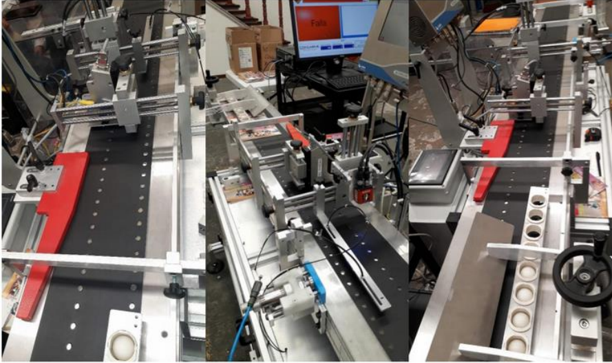
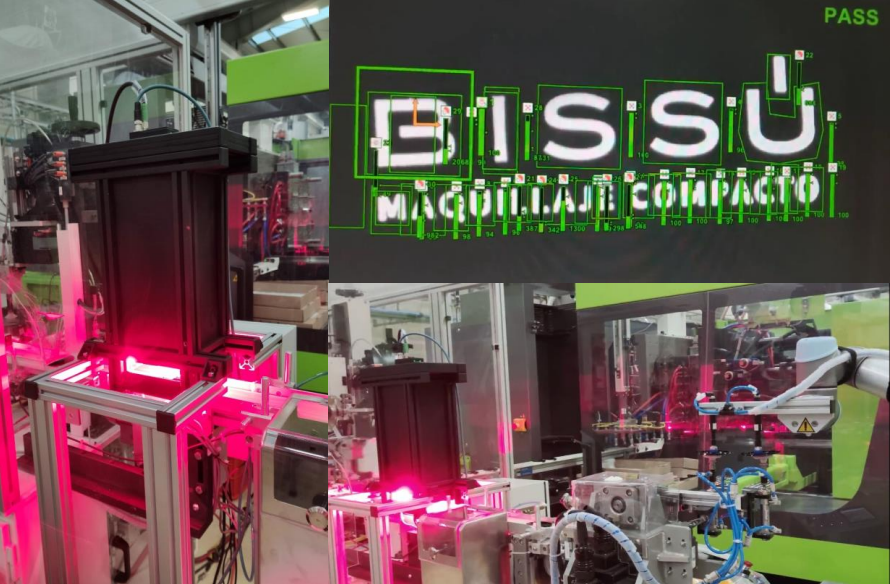
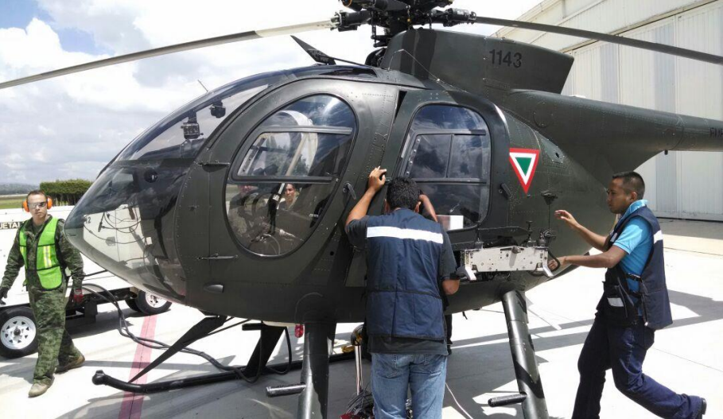
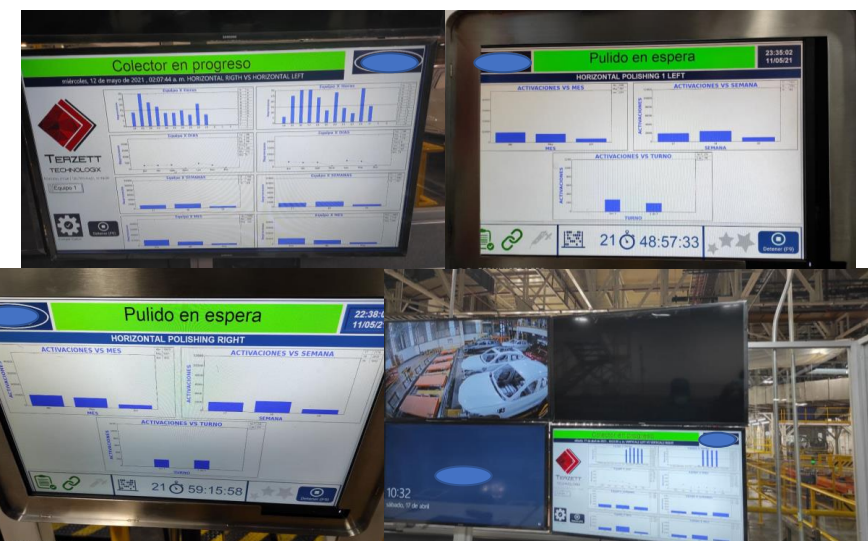

Proyectos
Desde servicios de reparación hasta desarrollos personalizados de grado industrial, nuestro equipo multidisciplinario resuelve requerimientos y necesidades especializadas de la industria.

Sistema de conteo basado en inteligencia artificial (I.A.)
Sistema de conteo empleado en una de las empresas más importantes de paquetería a nivel mundial. Se desarrolló para determinar la cantidad de paquetes que se procesan diariamente.
La I.A. empleada se puede adecuar para contar prácticamente cualquier tipo de objeto en líneas de producción.

Sistema de inspección de carrocerías
Sistema de inspección empleado en el control de calidad de las carrocerías
El software desarrollado por Terzett Technologix reconstruye mediante múltiples imágenes de ultra alta resolución las partes de la carrocería permitiendo así al inspector ver defectos en la pintura.
Cuenta con la capacidad de almacenar hasta 6 meses de producción.

Sistema de codificación impresión y decodificado de QR's
Terzett Technologix desarrolló el software y la solución completa de integración con impresoras KBA para determinar si los códigos QR promocionales de los folletos impresos de una marca de juguetes pueden ser leídos por los usuarios finales con sus smartphones.
A diferencia de otros sistemas comunes que reconstruyen códigos impresos, el software de Terzett Tech determina si realmente el código será legible por un dispositivo móvil de uso cotidiano.

Sistema de inspección de ampolletas
Sistema de inspección empleado en el control de calidad de productos de vidrio.
Tras su exitosa implementación en más de 100 líneas de producción, este sistema se ha mejorado para ser una herramienta del aseguramiento de la calidad de la industria farmacéutica.
Cuenta con la capacidad de configurarse y adaptarse a múltiples requerimientos y recetas. Inspecciona 50 propiedades en vista de 360° del producto.

Sistema de análisis de caracteres
Terzett Technologix creó un juego de lámparas y un sistema de iluminación específico para materiales ultra reflejantes empleados en la industria de los cosméticos.
Derivado de la ingeniería optomecánica se logró poner en marcha un sistema de visión que permitió inspeccionar las características cosméticas de los logotipos.
Las iluminaciones marca Terzett Technologix han comprobado más de 26,280 horas de trabajo continuo con el mejor desempeño.

Dispositivos de monitoreo abordo y conteo de munición
Sistema de alta precisión basado en normativas militares para el conteo de metralla y cohetes a bordo de la aeronave.
Los dispositivos empleados de grado industrial y aeronáutico permitían mostrar información de monitoreo en un DLP.
Actualmente los dispositivos empleados, que cuentan con rutinas específicas para microcontroladores desarrolladas por Terzett Technologix se están empleando en nuevos productos de gama alta.

Sistema de seguimiento de producción
Se desarrolló un sistema de monitoreo de seguimiento de producción. En este caso nuestro software se adecuó para determinar los ciclos de pulido reales que los operadores de planta están realizando.
Los sistemas distribuidos muestran información localmente y además comunican todos los datos a un sistema concentrador de datos que guarda reportes para la supervisión y despliega gráficos generales.
El software contiene una primera etapa de ludificación que está enfocada en mejorar la productividad.